CSS controls the visual presentation and styling of HTML elements, including colors, fonts, spacing, layouts, and
responsive design for different screen sizes. It works alongside HTML (which defines content structure) to create
visually appealing and well-organized web pages.
CSS saves development time through reusable styling, improves
page load speed by reducing repetitive code, and simplifies maintenance with global style updates across multiple
pages.
CSS offers superior styling capabilities compared to HTML, enables responsive design for multiple
devices, and follows modern web standards for future browser compatibility.
CSS offers superior styling capabilities compared to HTML, enables responsive design for multiple devices, and follows modern web standards for future browser compatibility.
Inline CSS uses the style attribute directly on HTML elements, with multiple style rules separated by semicolons(;). These rules apply only to that specific element.
<!DOCTYPE html> <html lang="en"> <head> <meta charset="UTF-8"> <title>Inline CSS</title> </head> <body> <!-- The style attribute holds the CSS. It only changes this one element. --> <h1 style="color: #36C;">This is inline CSS</h1> <!-- More than one rule goes in the same quotes, with a semicolon after each one. --> <p style="color: maroon; font-size: 20px;">Two rules on one element.</p> </body> </html>
Pro-Tip: Inline styles beat the rules in a style block or a CSS file, and they have to be changed one element at a time. Use them for a quick test, then move the rule into your CSS.
Internal CSS uses the <style> element in the HTML document's <head> section to apply styles to all matching elements. The type="text/css" attribute is optional in HTML5, because CSS is the default, and the optional media attribute defines target devices.
<!DOCTYPE html> <html lang="en"> <head> <meta charset="UTF-8"> <title>Internal CSS</title> <style> /* Rules inside <style> apply to every matching element on this page. */ body { background-color: linen; } h1 { color: maroon; margin-left: 40px; } </style> </head> <body> <h1>This is a heading</h1> <p>This is a paragraph.</p> </body> </html>
External CSS uses the <link> element to connect a separate .css file to HTML documents. The required attributes are href for the file path and rel="stylesheet". type="text/css" is optional in HTML5, and there is an optional media attribute for device targeting.Consider a simple style sheet file with the name styles.css, saved in the same folder as the page, having the following rules:
/* styles.css: save this file in the same folder as the page. */ /* One rule for all three headings. */ h1, h2, h3 { color: #36C; font-weight: normal; /* The space between the letters. */ letter-spacing: .4em; margin-bottom: 1em; /* Shows the text in small letters, however it was typed. */ text-transform: lowercase; }
<!DOCTYPE html> <html lang="en"> <head> <meta charset="UTF-8"> <title>External CSS</title> <!-- href is the path to the CSS file, starting from the folder this page is in. --> <link rel="stylesheet" href="styles.css"> </head> <body> <h1>Heading 1</h1> <h2>Heading 2</h2> <h3>Heading 3</h3> </body> </html>
Pro-Tip: If the page shows with no styling at all, the href path is wrong. Open the browser DevTools, go to the Network tab, reload, and look for the CSS file with a 404 next to it.
@import is used to import an external stylesheet in a manner similar to the <link> element. Here is the generic syntax of the @import rule:
<!DOCTYPE html> <html lang="en"> <head> <meta charset="UTF-8"> <title>Imported CSS</title> <style> /* @import goes inside <style>, above every other rule. */ @import "mystyle.css"; /* Rules written under it come later, so they win when both set the same thing. */ h1 { color: maroon; } </style> </head> <body> <h1>Styled by mystyle.css and by this page</h1> </body> </html>
The style sheets define the color, size and position of text and other HTML tags, while the HTML files define the content and how it is organized. Separating them allows you to change the color scheme without having to rewrite your entire web site.
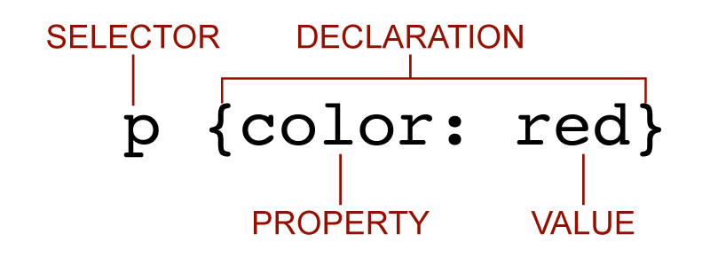
The cascading portion means that a style applied to a parent element will also apply to all children elements
within the parent. For example, setting the color of body text will mean all headings and paragraphs within the
body will also be the same color.
Basic style sheets usually modify the appearance of html tags such as <body> and <p>. When using CSS
files or style sheets within the header, we can also define classes of styles and
apply them to any element using the class="?" attribute.
The whole structure is called a rule set (but often a "rule" for short.) Note also the names of the individual parts: selector, declaration, property, value.
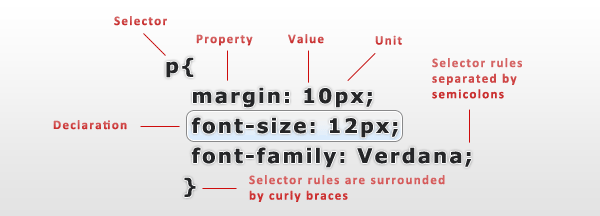
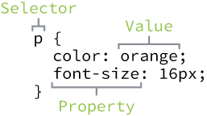
CSS selectors target specific HTML elements for styling. Basic selectors include element, class, and ID selectors, along with pseudo-classes for element states.
Sometimes called a tag or type selector. This basic selector chooses all elements that matches the given
name.
For example, the code below uses the p element selector, so every paragraph on the page gets that look.
<!DOCTYPE html> <html lang="en"> <head> <meta charset="UTF-8"> <title>Element Selector</title> <style> /* The tag name on its own: every <p> on the page gets this rule. */ p { color: navy; } </style> </head> <body> <h1>The heading is not changed</h1> <p>First paragraph.</p> <p>Second paragraph.</p> </body> </html>
This basic selector chooses element(s) based on the value of their class attribute (Multiple class instances can
appear on a page).
The example below uses the class name index, so any element that has class="index" gets the index rule.
<!DOCTYPE html> <html lang="en"> <head> <meta charset="UTF-8"> <title>Class Selector</title> <style> /* A class selector starts with a dot. Any number of elements can share a class. */ .index { color: green; font-weight: bold; } </style> </head> <body> <p class="index">This paragraph has the class.</p> <p>This paragraph does not.</p> <!-- The same class works on any tag. --> <h2 class="index">This heading has it too.</h2> </body> </html>
This basic selector chooses element on the page with the specified ID based on the value of its id attribute. There should be only one element with a given ID in a document. For example, the code below uses the id called calm.
<!DOCTYPE html> <html lang="en"> <head> <meta charset="UTF-8"> <title>ID Selector</title> <style> /* An id selector starts with a #. Only one element on the page may use this id. */ #calm { background-color: lightblue; padding: 10px; } </style> </head> <body> <p id="calm">Only this paragraph has the id.</p> <p>This paragraph is not changed.</p> </body> </html>
Pro-Tip: An id beats any number of classes, which makes its rule hard to change later. Use classes for styling, and keep ids for links, labels and JavaScript.
The universal selector (*) targets all elements on the page for styling.
<!DOCTYPE html> <html lang="en"> <head> <meta charset="UTF-8"> <title>Universal Selector</title> <style> /* The * matches every element on the page. This is a common reset. */ * { margin: 0; padding: 0; /* Makes width and height include the padding and the border. */ box-sizing: border-box; } </style> </head> <body> <h1>No default space around this heading</h1> <p>Or around this paragraph.</p> </body> </html>
This basic selector chooses nodes based on the value of one of its attributes.
The following is the syntax we usually use: [attr] [attr=value] [attr~=value] [attr|=value] [attr^=value]
[attr$=value] [attr*=value].
The code below styles only an img that has a src attribute, not every img.
<!DOCTYPE html> <html lang="en"> <head> <meta charset="UTF-8"> <title>Attribute Selectors</title> <style> /* [src] matches every <img> that has a src attribute. */ img[src] { border: 4px solid orange; } /* [attr="value"] matches one exact value. */ a[target="_blank"] { color: crimson; } /* [attr^="value"] matches a value that starts with that text. */ a[href^="https"] { font-weight: bold; } </style> </head> <body> <img src="https://placehold.co/200x100" alt="A placeholder image"> <p><a href="https://example.com" target="_blank" rel="noopener noreferrer">Opens in a new tab</a></p> <p><a href="page.html">A plain link</a></p> </body> </html>
Selects the specified element(s), but only when in the specified state, i.e. being hovered over.
<!DOCTYPE html> <html lang="en"> <head> <meta charset="UTF-8"> <title>Pseudo Class Selectors</title> <style> /* unvisited link */ a:link { color: #FF0000; } /* visited link */ a:visited { color: #00FF00; } /* mouse over link */ a:hover { color: #FF00FF; } /* selected link: while the mouse button is held down */ a:active { color: #0000FF; } </style> </head> <body> <a href="https://example.com">Move the mouse over this link, then click it</a> </body> </html>
Pro-Tip: Keep these four in this order: link, visited, hover, active. They are equally specific, so the one written last wins. With hover above visited, a visited link never changes on hover.
You can also select multiple types of elements and apply a single rule set to all of them. Include multiple selectors separated by commas.
<!DOCTYPE html> <html lang="en"> <head> <meta charset="UTF-8"> <title>Selecting Multiple Elements</title> <style> /* The commas mean: this one rule set is for p, li and h1. */ p, li, h1 { color: red; } </style> </head> <body> <h1>A red heading</h1> <p>A red paragraph.</p> <ul> <li>A red list item</li> </ul> <h2>This heading is not in the list, so it stays black</h2> </body> </html>
Before we start our study of CSS, we need an understanding of CSS measurement units.
CSS supports a number of measurements including absolute units and relative units such as percentages and em
units.
You need these values while specifying various measurements in your style rules.
For example: border: 1px solid red;
CSS has several different units for expressing a length. Many CSS properties take "length" values, such as width,
margin, padding, font-size, border-width, etc.
Length is a number followed by a length unit, such as 10px, 2em, etc. A whitespace cannot appear between the
number and the unit. However, if the value is 0, the unit can be omitted. For some CSS properties, negative
lengths are allowed. There are two types of length units: relative and absolute.
Relative length units specify a length relative to another length property. Relative length units scale better between different rendering mediums. The em and rem units are practical in creating perfectly scalable layout!
The absolute length units are fixed and a length expressed in any of these will appear as exactly that size. Absolute length units are not recommended for use on screen, because screen sizes vary so much. However, they can be used if the output medium is known, such as for print layout. Here is a list of the units:
* Pixels (px) are relative to the viewing device. For low-dpi devices, 1px is one device pixel (dot) of the display. For printers and high resolution screens 1px implies multiple device pixels.
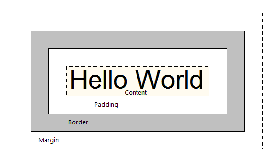
According to the box model concept, every element on a page is a rectangular box and may have width, height, padding, borders, and margins.
The first step to understanding the CSS box model is to create a clear mental picture of it. If you've ever inspected an HTML element in Google Chrome you've seen something like this:
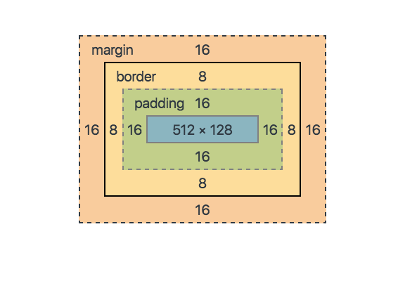
The CSS box model treats every element as layered rectangular boxes containing content, padding, borders, and margins, with outer boxes wrapping inner boxes.
The CSS box model is made up of 5 layers. However, developers usually lump the border and outline together into the same layer so it can be interpreted as only 4 layers.
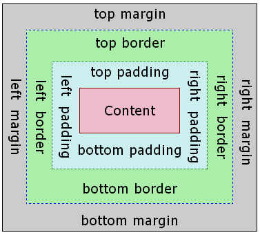
<!DOCTYPE html> <html lang="en"> <head> <meta charset="UTF-8"> <title>CSS Box Model</title> <style> #parent { background: yellow; /* Keeps the margin of the child inside the parent. */ overflow: auto; } #child { background: blue; /* The content area. */ width: 512px; height: 128px; /* Space inside the border. It shows the blue background. */ padding: 16px; /* Space outside the border. The yellow parent shows through it. */ margin: 16px; border: 8px solid green; /* Drawn outside the border. It takes up no space of its own. */ outline: 8px solid red; } #grandchild { background: orange; width: 512px; height: 128px; } </style> </head> <body> <div id="parent"> <div id="child"> <div id="grandchild"></div> </div> </div> </body> </html>
As you can see from the rendered and styled elements above, the box model follows the same ordering of layers we
described earlier in this lesson.
From innermost to outermost:
Every element is a rectangular box, and there are several properties that determine the size of that box.
The core of the box is defined by the width and height of an element, which may be determined by the display
property, by the contents of the element, or by specified width and height properties.
padding and then border expand the dimensions of the box outward from the element's width and height.
Lastly, any margin we have specified will follow the border.
Each part of the box model corresponds to a CSS property: width, height, padding, border, and margin.
Let's look these properties inside some code:
<!DOCTYPE html> <html lang="en"> <head> <meta charset="UTF-8"> <title>Box Model Example</title> <style> div { border: 6px solid #949599; height: 100px; margin: 20px; padding: 20px; width: 400px; /* Total width: 20 + 6 + 20 + 400 + 20 + 6 + 20 = 492px */ /* Total height: 20 + 6 + 20 + 100 + 20 + 6 + 20 = 192px */ } </style> </head> <body> <div>This box takes up 492px by 192px on the page.</div> </body> </html>
Pro-Tip: Add box-sizing: border-box; to make width mean the whole box, with the padding and the border inside it. Then width: 400px really is 400px wide. Most projects set it on every element with * { box-sizing: border-box; }.
According to the box model, the total width of an element can be calculated using the following formula:
margin-right + border-right + padding-right + width + padding-left + border-left + margin-left.
In comparison, according to the box model, the total height of an element can be calculated using the following
formula:
margin-top + border-top + padding-top + height + padding-bottom +
border-bottom + margin-bottom
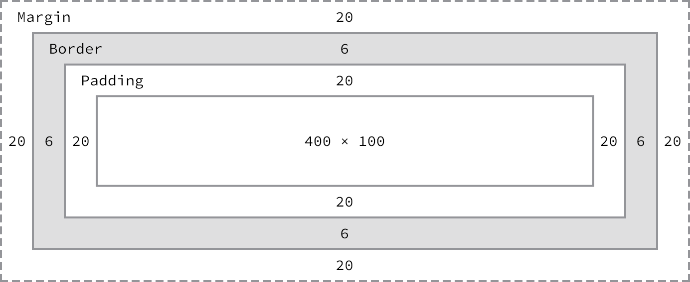
Using the formulas, we can find the total height and width of our example code.
The default width of an element depends on its display value. Block-level elements have a default width of 100%, consuming the entire horizontal space available. Inline and inline-block elements expand and contract horizontally to accommodate their content. Inline-level elements cannot have a fixed size, thus the width and height properties are only relevant to non-inline elements. To set a specific width for a non-inline element, use the width property:
<!DOCTYPE html> <html lang="en"> <head> <meta charset="UTF-8"> <title>Width</title> <style> div { /* A block element is as wide as the page unless you set a width. */ width: 400px; background-color: lightblue; } </style> </head> <body> <div>This div is 400px wide.</div> </body> </html>
The default height of an element is determined by its content. An element will expand and contract vertically as necessary to accommodate its content. To set a specific height for a non-inline element, use the height property:
<!DOCTYPE html> <html lang="en"> <head> <meta charset="UTF-8"> <title>Height</title> <style> div { /* Without a height, a box is only as tall as its content. */ height: 100px; background-color: lightblue; } </style> </head> <body> <div>This div is 100px tall.</div> </body> </html>
Depending on the element, browsers may apply default margins and padding to an element to help with legibility
and clarity. We will generally see this with text-based elements. The default margins and padding for these
elements may differ from browser to browser and element to element.
It is good practice to use a CSS reset to tone all of these default values down to zero. Doing so allows us to
work from the ground up and to specify our own values.
The margin property allows us to set the amount of space that surrounds an element. Margins for an element fall outside of any border and are completely transparent in color. Margins can be used to help position elements in a particular place on a page or to provide breathing room, keeping all other elements a safe distance away.
<!DOCTYPE html> <html lang="en"> <head> <meta charset="UTF-8"> <title>Margin</title> <style> div { /* 20px of empty space on all four sides, outside the border. */ margin: 20px; background-color: lightblue; } </style> </head> <body> <div>First box</div> <div>Second box</div> </body> </html>
Pro-Tip: Top and bottom margins that touch are merged into one. Two boxes with margin: 20px are 20px apart, not 40px. This is called margin collapse, and it does not happen to padding.
Something important to notice:
One oddity with the margin property is that vertical margins, top and bottom, are not accepted by inline-level
elements. These vertical margins are, however, accepted by block-level and inline-block elements.
The padding property is very similar to the margin property; however, it falls inside of an element’s border, should an element have a border. The padding property is used to provide spacing directly within an element.
<!DOCTYPE html> <html lang="en"> <head> <meta charset="UTF-8"> <title>Padding</title> <style> div { /* 20px of space on all four sides, between the text and the edge of the box. */ padding: 20px; background-color: lightblue; } </style> </head> <body> <div>The text sits 20px in from every edge.</div> </body> </html>
Borders fall between the padding and margin, providing an outline around an element. The border property requires
three values: width, style, and color.
Shorthand values for the border property are stated in that order—width, style, color. In longhand, these three
values can be broken up into the border-width, border-style, and border-color properties.
These longhand properties are useful for changing, or overwriting, a single border value.
The width and color of borders can be defined using common CSS units of length and color, as we will discuss
later.
Borders can have different appearances. The most common style values are solid, double, dashed, dotted, and none,
but there are several others to choose from.
Here is the code for a 6-pixel-wide, solid, gray border that wraps around all four sides of a
<div>:
<!DOCTYPE html> <html lang="en"> <head> <meta charset="UTF-8"> <title>Border</title> <style> div { /* The order is: width, style, color. */ border: 6px solid #949599; } </style> </head> <body> <div>A 6 pixel wide, solid, gray border.</div> </body> </html>
The border-style property specifies what kind of border to display. The following values are allowed: (* The
effect depends on the border-color value)
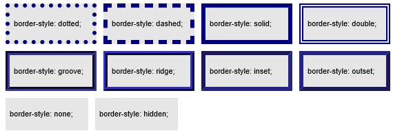
<!DOCTYPE html> <html lang="en"> <head> <meta charset="UTF-8"> <title>Border Styles</title> <style> /* A wide colored border makes the 3D styles easy to see. */ p { border-width: 6px; border-color: steelblue; padding: 4px; } </style> </head> <body> <p style="border-style: dotted;">A dotted border.</p> <p style="border-style: dashed;">A dashed border.</p> <p style="border-style: solid;">A solid border.</p> <p style="border-style: double;">A double border.</p> <p style="border-style: groove;">A groove border.</p> <p style="border-style: ridge;">A ridge border.</p> <p style="border-style: inset;">An inset border.</p> <p style="border-style: outset;">An outset border.</p> <p style="border-style: none;">No border.</p> <p style="border-style: hidden;">A hidden border.</p> </body> </html>
Shorthands handling properties related to edges of a box, like border-style, margin or padding, always use a consistent 1-to-4-value syntax representing those edges:
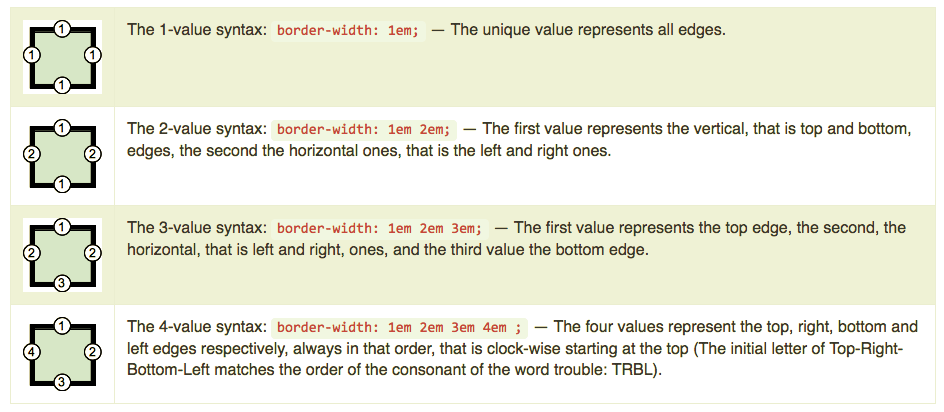
Similarly, shorthands handling properties related to corners of a box, like border-radius, always use a consistent 1-to-4-value syntax representing those corners:
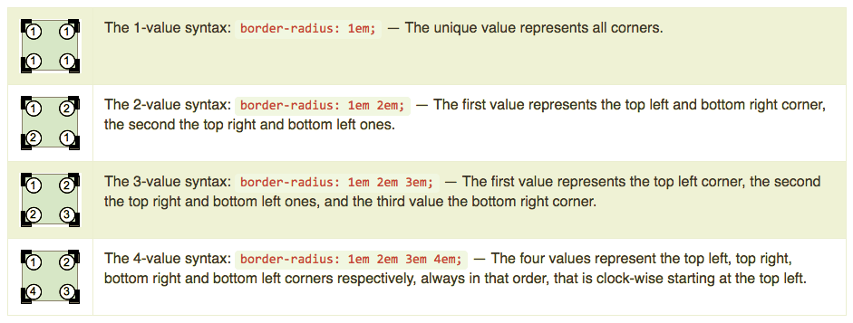
<!DOCTYPE html> <html lang="en"> <head> <meta charset="UTF-8"> <title>Conflicting Styles</title> <style> body { font-family: arial, helvetica, sans-serif; } /* Only a link with class="nodec". */ a.nodec { text-decoration: none; } /* Written later than a.nodec, so on hover this rule wins and the underline comes back. */ a:hover { text-decoration: underline; } /* Only an <em> that is inside an <li>. */ li em { font-weight: bold; } h1, em { text-decoration: underline; } ul { margin-left: 20px; } /* A list inside a list: 80% of the size of the outer list. */ ul ul { font-size: .8em; } </style> </head> <body> <h1>Shopping list for Monday:</h1> <ul> <li>Milk</li> <li>Bread <ul> <li>White bread</li> <li>Rye bread</li> <li>Whole wheat bread</li> </ul> </li> <li>Rice</li> <li>Potatoes</li> <!-- This em matches two rules: li em makes it bold and h1, em underlines it. --> <li>Pizza <em>with mushrooms</em></li> </ul> <p><em>Go to the</em> <a class="nodec" href="http://www.store.com">Grocery store</a> </p> </body> </html>
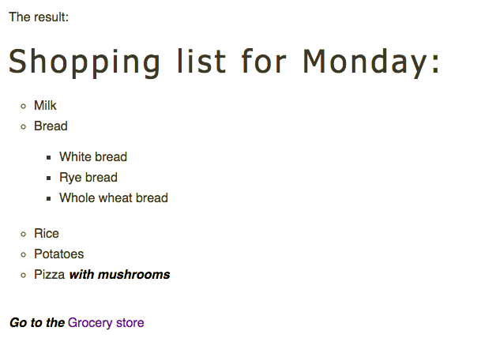
Before CSS, controlling the positioning of elements in an (X)HTML document was difficult—the browser determined positioning. CSS introduced the position property and a capability called absolute positioning, which gives authors greater control over how document elements are displayed.
<!DOCTYPE html> <html lang="en"> <head> <meta charset="UTF-8"> <title>Absolute Positioning</title> <style> /* absolute: placed by top and left, measured from the corner of the page. */ .bgimg { position: absolute; top: 0px; left: 0px; /* The lowest z-index, so it is at the back. */ z-index: 1; } .fgimg { position: absolute; top: 25px; left: 100px; /* In front of bgimg. */ z-index: 2; } .text { position: absolute; top: 25px; left: 100px; /* The highest z-index, so the text is in front of both images. */ z-index: 3; font-size: 20pt; font-family: tahoma, geneva, sans-serif; } </style> </head> <body> <!-- bgimg.gif and fgimg.gif have to be files in the same folder as this page. --> <p><img src="bgimg.gif" class="bgimg" alt="First positioned image"></p> <p><img src="fgimg.gif" class="fgimg" alt="Second positioned image"></p> <p class="text">Positioned Text</p> </body> </html>
Pro-Tip: An absolute element is placed from the nearest parent that has a position set. To place it inside one box instead of the whole page, give that box position: relative.
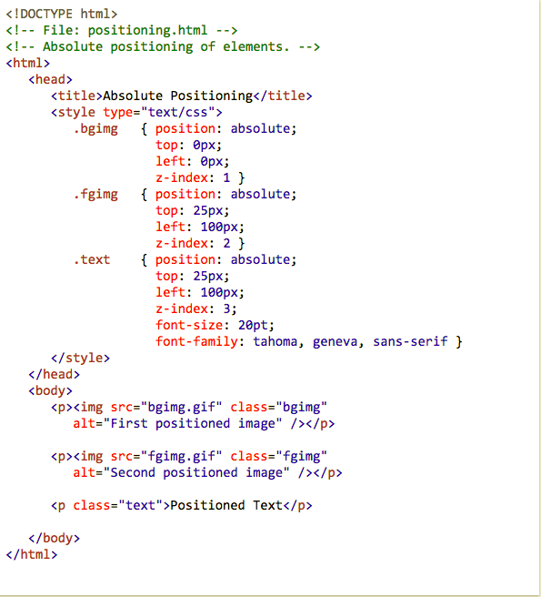
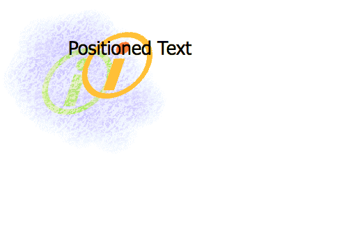
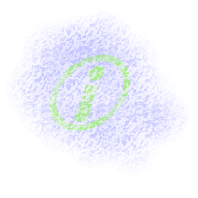
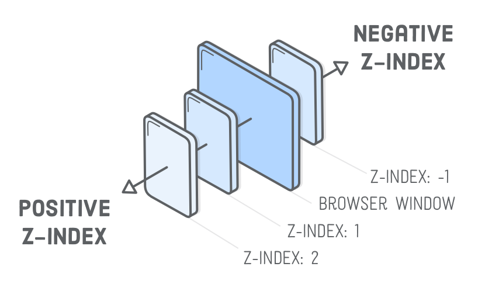
Absolute positioning is not the only way to specify page layout. The following example demonstrates relative positioning, in which elements are positioned relative to other elements.
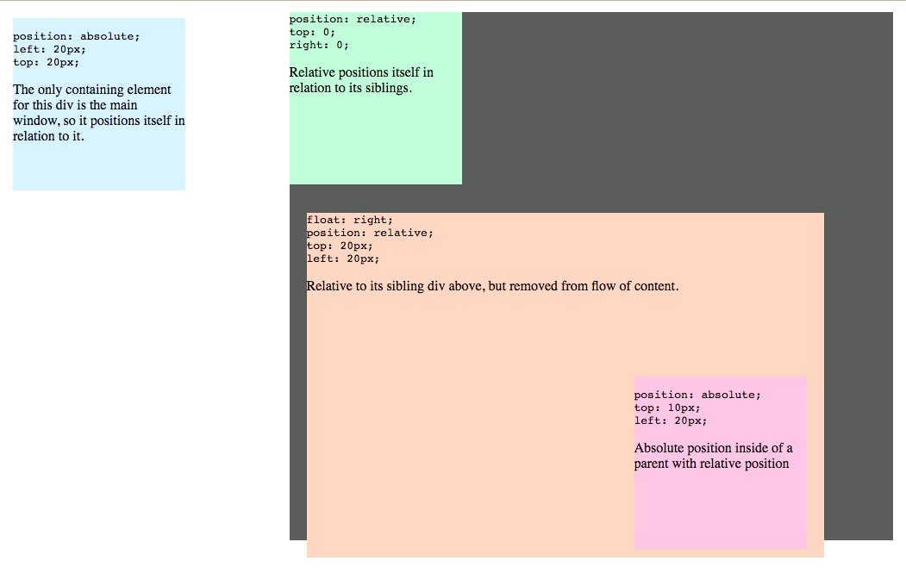
The example wraps the end of a sentence in a span with the class super. The CSS rule for .super uses relative positioning: top: -1ex lifts that text a little above the line, like a superscript, while the rest of the sentence stays where it was.
<!DOCTYPE html> <html lang="en"> <head> <meta charset="UTF-8"> <title>Relative Positioning</title> <style> /* relative: moved from the place where it would normally sit. */ .super { position: relative; /* -1ex lifts the text by about the height of one small letter. */ top: -1ex; } </style> </head> <body> <p>The text at the end of this sentence <span class="super">is in superscript</span>.</p> </body> </html>
CSS provides control over the background of block-level elements. CSS can set a background color or add background images to (X)HTML elements. In the example below, the author adds a corporate logo to the bottom-right corner of the document. This logo stays fixed in the corner even when the user scrolls up or down the screen.
<!DOCTYPE html> <html lang="en"> <head> <meta charset="UTF-8"> <title>Background</title> <style> body { /* logo.gif has to be a file in the same folder as this page. */ background-image: url(logo.gif); background-position: bottom right; /* Show the image once instead of tiling it. */ background-repeat: no-repeat; /* The image stays in the corner while the page scrolls. */ background-attachment: fixed; background-color: #eeeeee; } p { font-size: 18pt; color: #1144AA; /* Indents the first line of each paragraph. */ text-indent: 1em; font-family: arial, sans-serif; } .dark { font-weight: bold; } </style> </head> <body> <p>This example uses the background-image, background-position and background-attachment styles to place the <span class="dark">logo</span> in the bottom right corner of the page.</p> <p>Notice how the logo stays in the proper position when you resize your browser window.</p> </body> </html>
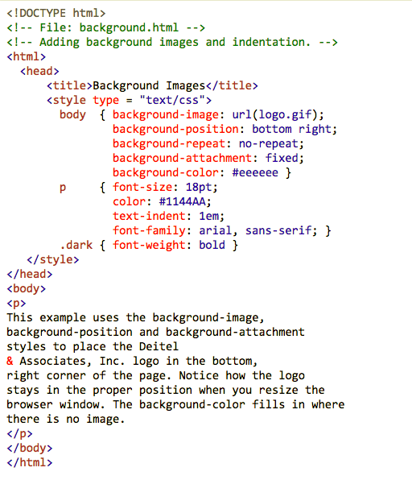
<!DOCTYPE html> <html lang="en"> <head> <meta charset="UTF-8"> <title>Background Examples</title> <style> body { /* img_tree.png has to be a file in the same folder as this page. */ background-image: url("img_tree.png"); /* no-repeat shows the image once. repeat-x would repeat it across the page, and repeat-y would repeat it down the page. */ background-repeat: no-repeat; /* Where the image sits: across first, then up or down. */ background-position: right top; /* fixed: the image does not scroll with the rest of the page. */ background-attachment: fixed; } </style> </head> <body> <h1>Background image</h1> <p>The tree is shown once, in the top right corner.</p> </body> </html>
To shorten the code, it is also possible to specify all the background properties in one single property.
This is called a shorthand property. The shorthand property for background is:
<!DOCTYPE html> <html lang="en"> <head> <meta charset="UTF-8"> <title>Background Shorthand</title> <style> body { /* All in one line: color, image, repeat, position. */ background: #ffffff url("img_tree.png") no-repeat right top; } </style> </head> <body> <h1>Background shorthand</h1> <p>One property does the work of four.</p> </body> </html>
In Chairvana (CodePath Web102) I put moving GIFs behind the page and behind the forms. The trick is an <img> that is position: fixed (or absolute) and stretched to fill the screen, pushed behind the content with z-index, faded with opacity, and made unclickable with pointer-events: none. The content then gets a higher z-index so it sits on top.
<!DOCTYPE html> <html lang="en"> <head> <meta charset="UTF-8"> <title>GIF Behind The Whole Page</title> <style> .bg-gif-fixed { position: fixed; /* glued to the screen, doesn't scroll */ top: 0; left: 0; width: 100%; height: 100%; object-fit: cover; /* fills the screen without stretching */ z-index: 0; /* behind everything */ opacity: 0.2; /* faded so text stays readable */ pointer-events: none; /* clicks go "through" it to the page */ } #content { position: relative; /* z-index only works on positioned elements */ z-index: 1; /* content sits ON TOP of the GIF */ background: transparent; } </style> </head> <body> <!-- Decorative, so alt="" and aria-hidden (screen readers skip it). --> <!-- In React (JSX) write className instead of class, and end the tag with />. --> <img src="old_man_in_chair.gif" class="bg-gif-fixed" alt="" aria-hidden="true"> <div id="content"> <h1>Chairvana</h1> <p>The page content sits on top of the GIF.</p> </div> </body> </html>
<!DOCTYPE html> <html lang="en"> <head> <meta charset="UTF-8"> <title>GIF Behind One Form</title> <style> .create-page-wrapper { position: relative; /* the GIF is positioned INSIDE this box */ min-height: 100vh; display: flex; justify-content: center; align-items: flex-start; padding-top: 50px; overflow: hidden; /* clips the GIF so it can't spill out */ background: #000; /* fallback if the GIF fails to load */ } .bg-gif { position: absolute; /* absolute = relative to the wrapper, not the screen */ inset: 0; /* same as top:0; right:0; bottom:0; left:0 */ width: 100%; height: 100%; object-fit: cover; z-index: 1; opacity: 0.5; } .form-container { position: relative; z-index: 2; /* form ABOVE the GIF */ background: rgba(249, 240, 255, 0.95); /* almost solid = readable */ backdrop-filter: blur(5px); /* frosted-glass look */ padding: 30px; border-radius: 8px; max-width: 500px; width: 100%; } </style> </head> <body> <!-- In React (JSX) write className instead of class. --> <div class="create-page-wrapper"> <img src="chair-bg.gif" class="bg-gif" alt="" aria-hidden="true"> <section class="form-container"> <form> <label for="name">Chair name</label><br> <input type="text" id="name" name="name"><br><br> <button type="submit">Create</button> </form> </section> </div> </body> </html>
alt text: Chairvana used alt="background", so screen readers read the word "background" on every page. A purely decorative image should have alt="" (plus aria-hidden="true") so it is skipped.
Motion: WCAG 2.2.2 says moving content that lasts more than 5 seconds needs a way to pause or hide it, and some people get dizzy or sick from motion. CSS can't pause a GIF, so the safe fix is to hide it for anyone who turned on Reduce Motion (Mac: System Settings > Accessibility > Display).
Readability: keep the GIF faded (opacity 0.2 to 0.5) and put text on a near-solid panel, so text contrast stays at least 4.5:1.
<!DOCTYPE html> <html lang="en"> <head> <meta charset="UTF-8"> <title>Reduced Motion</title> <style> .bg-gif-fixed { position: fixed; inset: 0; width: 100%; height: 100%; object-fit: cover; opacity: 0.2; pointer-events: none; } /* People who asked for less motion get no moving background */ @media (prefers-reduced-motion: reduce) { .bg-gif, .bg-gif-fixed { display: none; } } </style> </head> <body> <img src="old_man_in_chair.gif" class="bg-gif-fixed" alt="" aria-hidden="true"> <h1>Turn on Reduce Motion and the GIF is gone</h1> </body> </html>
Chairvana's post images rotated and wiped in and out. The container uses overflow: hidden so the rotating image is clipped, and the image rests at scale(0.7) so its corners fit while it turns. React adds the animating class every 30 seconds to replay it.
<!DOCTYPE html> <html lang="en"> <head> <meta charset="UTF-8"> <title>Spinning Card Image</title> <style> .post-image-container { overflow: hidden; /* clips the image while it rotates */ display: flex; align-items: center; justify-content: center; } .post-image { transform: rotate(0deg) scale(0.7); /* small enough to fit at any angle */ transform-origin: center center; } .post-image.animating { animation: nivoMasterSequence 12s ease-in-out forwards; } /* Each step wipes the image out to one side, turns it 90 degrees, and wipes it back in. */ @keyframes nivoMasterSequence { 0% { clip-path: inset(0 0 0 0); opacity: 1; transform: rotate(0deg) scale(0.7); } 8% { clip-path: inset(0 0 0 100%); opacity: 0; transform: rotate(0deg) scale(0.65); } 18% { clip-path: inset(0 0 0 0); opacity: 1; transform: rotate(90deg) scale(0.7); } 28% { clip-path: inset(100% 0 0 0); opacity: 0; transform: rotate(90deg) scale(0.65); } 40% { clip-path: inset(0 0 0 0); opacity: 1; transform: rotate(180deg) scale(0.7); } 50% { clip-path: inset(0 100% 0 0); opacity: 0; transform: rotate(180deg) scale(0.65); } 62% { clip-path: inset(0 0 0 0); opacity: 1; transform: rotate(270deg) scale(0.7); } 72% { clip-path: inset(0 0 100% 0); opacity: 0; transform: rotate(270deg) scale(0.65); } 85% { clip-path: inset(0 0 0 0); opacity: 1; transform: rotate(360deg) scale(0.7); } 100% { clip-path: inset(0 0 0 0); opacity: 1; transform: rotate(360deg) scale(0.7); } } /* Same rule: no spinning for people who asked for less motion */ @media (prefers-reduced-motion: reduce) { .post-image.animating { animation: none; } } </style> </head> <body> <div class="post-image-container"> <img class="post-image" id="postImage" src="https://placehold.co/300x200" alt="A chair"> </div> <button type="button" id="replay">Play it again</button> <script> // In Chairvana, React added the animating class on a timer. // Plain JavaScript does the same job here. const image = document.getElementById("postImage"); function play() { // Take the class off and put it back on, so the animation starts from 0%. image.classList.remove("animating"); // Reading offsetWidth makes the browser notice that the class is gone. void image.offsetWidth; image.classList.add("animating"); } document.getElementById("replay").addEventListener("click", play); play(); </script> </body> </html>
In addition to positioning elements, CSS rules can specify the actual dimensions of each page element. The example below demonstrates how to set the dimensions of elements.
<!DOCTYPE html> <html lang="en"> <head> <meta charset="UTF-8"> <title>Element Dimensions</title> <style> div { background-color: #aaccff; margin-bottom: .5em; font-family: arial, helvetica, sans-serif; } </style> </head> <body> <!-- 20% of the width of the page. --> <div style="width: 20%">Here is some text that goes in a box which is set to stretch across twenty percent of the width of the screen.</div> <div style="width: 80%; text-align: center"> Here is some CENTERED text that goes in a box which is set to stretch across eighty percent of the width of the screen.</div> <!-- A fixed height. overflow: scroll adds scroll bars when the text does not fit. --> <div style="width: 20%; height: 150px; overflow: scroll"> This box is only twenty percent of the width and has a fixed height. What do we do if it overflows? Set the overflow property to scroll!</div> </body> </html>
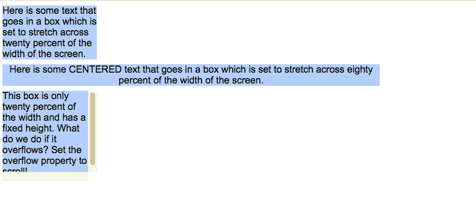
The inline style style="width:20%" illustrates how to set the width of an element on the screen; here, we
indicate that the div element should occupy 20 percent of the screen width. The height of an element can be set
similarly, using the height property. The height and width values also can be specified as relative or absolute
lengths. For example:
width: 10em sets the element's width to 10 times the font size.
Most elements are left aligned by default; however, this alignment can be altered to position the element
elsewhere. text-align: center other values for the text-align property include left and right.
The float property specifies whether or not a box (an element) should float.
float: none|left|right|initial|inherit; Property Values
<!DOCTYPE html> <html lang="en"> <head> <meta charset="UTF-8"> <title>Float</title> <style> div.heading { background-color: #bbddff; text-align: center; font-family: arial, helvetica, sans-serif; padding: .2em; } p { text-align: justify; font-family: verdana, geneva, sans-serif; margin: .5em; } div.floated { background-color: #eeeeee; font-size: 1.5em; font-family: arial, helvetica, sans-serif; padding: .2em; margin-left: .5em; margin-bottom: .5em; /* Moves the box to the right edge. The paragraph text wraps around its left side. */ float: right; text-align: right; /* A floated box needs a width, or it shrinks to fit its text. */ width: 50%; } div.section { border: 1px solid #bbddff; } </style> </head> <body> <!-- deitel.png has to be a file in the same folder as this page. --> <div class="heading"><img src="deitel.png" alt="Deitel"></div> <div class="section"> <!-- The floated box comes first in the HTML, before the text that wraps around it. --> <div class="floated">Corporate Training and Publishing</div> <p>Deitel & Associates, Inc. is an internationally recognized corporate training and publishing organization specializing in programming languages, Internet/World Wide Web technology and object technology education. The company provides courses on Java, C++, Visual Basic, C, Internet and World Wide Web programming, and Object Technology.</p> </div> <div class="section"> <div class="floated">Leading-Edge Programming Textbooks</div> <p>Through its publishing partnership with Prentice Hall, Deitel & Associates, Inc. publishes leading-edge programming textbooks, professional books, interactive CD-ROM-based multimedia Cyber Classrooms, satellite courses and World Wide Web courses.</p> </div> </body> </html>
Pro-Tip: A box with only floated children gets a height of 0, and the next content climbs up beside the float. Put clear: both on the element that should start below it. For a new layout, use flexbox or grid instead of float.
<!DOCTYPE html> <html lang="en"> <head> <meta charset="UTF-8"> <title>Media Types</title> <style> /* These rules are used everywhere: on the screen and on paper. */ @media all { body { background-color: #4488aa; } h1 { font-family: verdana, helvetica, sans-serif; color: #aaffcc; } p { font-size: 12pt; color: white; font-family: arial, sans-serif; } } /* end of @media all */ /* These rules are only used when the page is printed. They come later, so they win. */ @media print { body { background-color: white; } h1 { color: #008844; } p { font-size: 14pt; color: #4488aa; font-family: "times new roman", times, serif; } } /* end of @media print */ </style> </head> <body> <h1>CSS Media Types Example</h1> <p>This example uses CSS media types to change how the page looks when it is printed. Press Ctrl + P or Cmd + P to see the print version.</p> </body> </html>
Pro-Tip: Today only all, screen and print are used. handheld, braille, aural, projection, tty and tv were removed from CSS, and browsers ignore them.
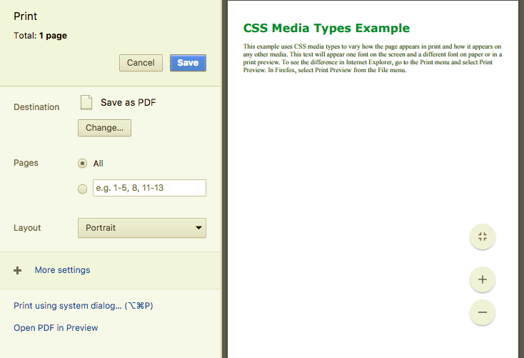
CSS media queries are a feature of CSS 3 that allow the rendering of content to adapt to different conditions, such as screen resolution, device orientation, or user preferences. They are a cornerstone technology of responsive web design, enabling websites to provide an optimal viewing experience across a wide range of devices.
<!DOCTYPE html> <html lang="en"> <head> <meta charset="UTF-8"> <meta name="viewport" content="width=device-width, initial-scale=1.0"> <title>Media Query Syntax</title> <style> /* The pattern is: @media <media-type> and (<media-feature>) { rules } */ @media screen and (min-width: 600px) { /* CSS rules to apply */ body { background-color: lightyellow; } } </style> </head> <body> <p>Make the window wider than 600px and the page turns light yellow.</p> </body> </html>
Media queries are essential for creating responsive web designs, allowing developers to tailor the user experience based on the device and user preferences without changing the underlying HTML content. They enable flexible layouts, adjusted font sizes, and optimized image delivery for various screen sizes and viewing conditions.
<!DOCTYPE html> <html lang="en"> <head> <meta charset="UTF-8"> <meta name="viewport" content="width=device-width, initial-scale=1.0"> <title>Wider Than 768px</title> <style> /* min-width: 768px means: the window is 768px wide or wider. */ @media screen and (min-width: 768px) { body { background-color: lightblue; } } </style> </head> <body> <p>The page is light blue when the window is 768px wide or wider.</p> </body> </html>
Pro-Tip: Media queries need the viewport line in the head: <meta name="viewport" content="width=device-width, initial-scale=1.0">. Without it, a phone pretends to be about 980px wide and your small screen rules never run.
<!DOCTYPE html> <html lang="en"> <head> <meta charset="UTF-8"> <meta name="viewport" content="width=device-width, initial-scale=1.0"> <title>Between 480px And 768px</title> <style> /* Both conditions have to be true: at least 480px and at most 768px. */ @media screen and (min-width: 480px) and (max-width: 768px) { h1 { font-size: 1.5em; } } </style> </head> <body> <h1>This heading is smaller between 480px and 768px</h1> </body> </html>
<!DOCTYPE html> <html lang="en"> <head> <meta charset="UTF-8"> <meta name="viewport" content="width=device-width, initial-scale=1.0"> <title>Dark Mode</title> <style> /* Used when the computer or phone is set to dark mode. */ @media (prefers-color-scheme: dark) { body { background-color: #333; color: #eee; } } </style> </head> <body> <p>Switch your computer to dark mode and this page turns dark.</p> </body> </html>
<!DOCTYPE html> <html lang="en"> <head> <meta charset="UTF-8"> <meta name="viewport" content="width=device-width, initial-scale=1.0"> <title>Light Green From 480px</title> <style> /* 480px wide or wider. */ @media screen and (min-width: 480px) { body { background-color: lightgreen; } } </style> </head> <body> <p>The page is light green when the window is 480px wide or wider.</p> </body> </html>
<!DOCTYPE html> <html lang="en"> <head> <meta charset="UTF-8"> <meta name="viewport" content="width=device-width, initial-scale=1.0"> <title>Colors For Different Widths</title> <style> /* Base style for mobile devices */ body { background-color: olive; color: white; } /* For devices with a minimum width of 768px (Medium) */ @media screen and (min-width: 768px) { body { background-color: blue; color: white; } } /* For devices with a minimum width of 992px (Large) */ @media screen and (min-width: 992px) { body { background-color: tan; color: black; } } </style> </head> <body> <p>Drag the edge of the window. The color changes at 768px and again at 992px.</p> </body> </html>
Pro-Tip: Write the phone styles first, then the min-width queries from smallest to largest. They are equally specific, so a query written above a smaller one gets overruled by it.
A common use of media queries, is to create a flexible layout. In this example, we create a layout that varies between four, two and full-width columns, depending on different screen sizes:
<!DOCTYPE html> <html lang="en"> <head> <meta charset="UTF-8"> <meta name="viewport" content="width=device-width, initial-scale=1.0"> <title>Media Queries For Columns</title> <style> /* Padding and borders are counted inside the width of every element. */ * { box-sizing: border-box; } /* Container for flexboxes */ .container { display: flex; flex-wrap: wrap; } /* Create four equal columns */ .column { flex: 25%; padding: 20px; } /* On screens that are 992px wide or less, go from four columns to two columns */ @media screen and (max-width: 992px) { .column { flex: 50%; } } /* On screens that are 600px wide or less, make the columns stack on top of each other instead of next to each other */ @media screen and (max-width: 600px) { .container { flex-direction: column; } } </style> </head> <body> <div class="container"> <div class="column" style="background-color: #aaa;">Column 1</div> <div class="column" style="background-color: #bbb;">Column 2</div> <div class="column" style="background-color: #ccc;">Column 3</div> <div class="column" style="background-color: #ddd;">Column 4</div> </div> </body> </html>
<!DOCTYPE html> <html lang="en"> <head> <meta charset="UTF-8"> <meta name="viewport" content="width=device-width, initial-scale=1.0"> <title>Responsive Design For Multiple Devices</title> <style> /* Desktop: four boxes in a row. */ .container { display: flex; flex-wrap: wrap; } .box { flex: 25%; padding: 20px; } /* Tablet */ @media (max-width: 992px) { .box { flex: 50%; } } /* Mobile */ @media (max-width: 600px) { .container { flex-direction: column; } } </style> </head> <body> <div class="container"> <div class="box" style="background-color: #aaa;">Box 1</div> <div class="box" style="background-color: #bbb;">Box 2</div> <div class="box" style="background-color: #ccc;">Box 3</div> <div class="box" style="background-color: #ddd;">Box 4</div> </div> </body> </html>
Here, we use media queries to create a responsive navigation menu, that varies in design on different screen sizes.
<!DOCTYPE html> <html lang="en"> <head> <meta charset="UTF-8"> <meta name="viewport" content="width=device-width, initial-scale=1.0"> <title>Media Queries For Menus</title> <style> ul { /* Takes away the bullets and the default space of a list. */ list-style-type: none; margin: 0; padding: 0; background-color: #333333; /* Puts the links side by side. */ display: flex; } ul li a { /* block makes the whole padded area clickable, not only the word. */ display: block; color: white; padding: 14px 16px; text-decoration: none; } ul li a:hover { background-color: #111111; } /* For viewport width 600px or less, make the menu links stack on top of each other */ @media screen and (max-width: 600px) { ul {flex-direction: column;} } </style> </head> <body> <ul> <li><a href="#home">Home</a></li> <li><a href="#news">News</a></li> <li><a href="#contact">Contact</a></li> <li><a href="#about">About</a></li> </ul> </body> </html>
<!DOCTYPE html> <html lang="en"> <head> <meta charset="UTF-8"> <meta name="viewport" content="width=device-width, initial-scale=1.0"> <title>Hide Elements With Media Queries</title> <style> /* Hide the element if the viewport width is 600px or less, like a phone */ @media screen and (max-width: 600px) { #div1 { display: none; } } </style> </head> <body> <div id="div1">This text is hidden on a small screen.</div> <p>This text always shows.</p> </body> </html>
<!DOCTYPE html> <html lang="en"> <head> <meta charset="UTF-8"> <meta name="viewport" content="width=device-width, initial-scale=1.0"> <title>Change Font Size With Media Queries</title> <style> /* If the viewport width is 600px or more, set font-size to 80px, like a big monitor or a TV */ @media screen and (min-width: 600px) { #div1 { font-size: 80px; } } </style> </head> <body> <div id="div1">Big text on a wide screen</div> </body> </html>
<!DOCTYPE html> <html lang="en"> <head> <meta charset="UTF-8"> <meta name="viewport" content="width=device-width, initial-scale=1.0"> <title>Screen Orientation</title> <style> /* landscape: the screen is wider than it is tall. */ @media only screen and (orientation: landscape) { body { background-color: lightblue; } } </style> </head> <body> <p>Turn your phone sideways, or make the window wider than it is tall, and the page turns light blue.</p> </body> </html>
First, create a division with five links, give the division the class menu.
<!DOCTYPE html> <html lang="en"> <head> <meta charset="UTF-8"> <title>CSS Menu</title> <style> body { font-family: arial, sans-serif; } div.menu { font-weight: bold; color: white; border: 2px solid #225599; text-align: center; width: 10em; background-color: #225599; } /* While the mouse is over the menu, show the links. */ div.menu:hover a { display: block; } /* The links are hidden until then. */ div.menu a { display: none; border-top: 2px solid #225599; background-color: white; width: 10em; text-decoration: none; color: black; } /* The one link the mouse is on gets a light blue background. */ div.menu a:hover { background-color: #dfeeff; } </style> </head> <body> <div class="menu">Menu <a href="#">Home</a> <a href="#">News</a> <a href="#">Articles</a> <a href="#">Blog</a> <a href="#">Contact</a> </div> </body> </html>
Pro-Tip: A menu that opens on :hover does not work with a keyboard, and it is unreliable on a touch screen. Add div.menu:focus-within a { display: block; } so that it also opens when a link inside it has the focus.
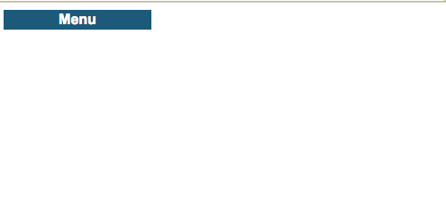
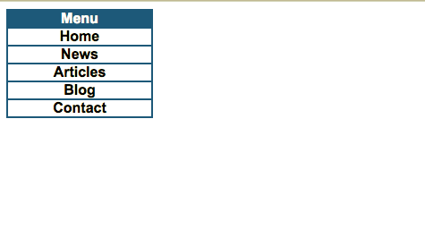
One quick and easy way to keep your CSS clean and well-structured is to remember the four CSS Rules of
Multiplicity. They are:
In a single rule is the most fundamental of the four CSS Rules of Multiplicity. Simply stated, it means you can have as many CSS declarations as you want between your opening and closing braces.
<!DOCTYPE html> <html lang="en"> <head> <meta charset="UTF-8"> <title>Multiple Selectors Example 1</title> <style> /* The same two declarations, written twice. */ p { font-size: 110%; color: #333; } ul { font-size: 110%; color: #333; } </style> </head> <body> <p>A paragraph.</p> <ul> <li>A list item</li> </ul> </body> </html>
<!DOCTYPE html> <html lang="en"> <head> <meta charset="UTF-8"> <title>Multiple Selectors Example 2</title> <style> /* The same result as example 1, written once for both selectors. */ p, ul { font-size: 110%; color: #333; } </style> </head> <body> <p>A paragraph.</p> <ul> <li>A list item</li> </ul> </body> </html>
<!DOCTYPE html> <html lang="en"> <head> <meta charset="UTF-8"> <title>Multiple Rules</title> <style> p { font-size: 110%; color: #333; } ul { font-size: 110%; color: #333; /* Only the list is bold, so it needs its own rule. */ font-weight: bold; } </style> </head> <body> <p>A paragraph.</p> <ul> <li>A list item</li> </ul> </body> </html>
Another way to tackle having multiple rules in common across elements is to create multiple classes.
But then
a while later, you decide you want something that is almost the same as your container class, but the text within
is larger and boldfaced. You might be tempted to write a completely new class that includes the padding, border,
background, and font size and weight that you need. But instead, you could just create a second class containing
just the differences between the two, like this:
<!DOCTYPE html> <html lang="en"> <head> <meta charset="UTF-8"> <title>Multiple Classes</title> <style> /* A class selector needs the dot in front. */ .container { padding: 5px; border: 2px solid #ccc; background-color: #f2f2f2; } /* Only the differences go in the second class. */ .strong { font-size: 150%; font-weight: bold; } </style> </head> <body> <!-- Two classes on one element, with a space between them. --> <div class="container strong"> This text is in our container, but is also big and bold. </div> <div class="container"> This text is in a plain container. </div> </body> </html>
The @import rule is another way of loading a CSS file. You can use it in two ways. The simplest is within the header of your document, like so:
<!DOCTYPE html> <html lang="en"> <head> <meta charset="UTF-8"> <title>The @import Rule</title> <style> /* Loads /css/styles.css. The / at the start means: from the top folder of the website. */ @import url('/css/styles.css'); </style> </head> <body> <h1>Styled by /css/styles.css</h1> </body> </html>
Or, you can import a style sheet from within another stylesheet. And better still, you can import any number of styles this way.
/* main.css: one file that loads three others. */ /* Every @import has to come before any other rule in the file. */ @import url('/css/typography.css'); @import url('/css/layout.css'); @import url('/css/color.css'); /* All three CSS files above will be loaded */ /* from this single document. */ /* Normal rules go after the imports. */ body { margin: 0; }
Pro-Tip: Each @import is only found after the file before it has loaded, so the files load one after another and the page is slower. Separate <link> tags load at the same time. Also, a comment above an @import is fine in every current browser. What breaks it is a normal rule above it.
Like most cool things in CSS, this one comes with a couple of warnings:
When should !important be used?
!important declarations should not be used unless they are absolutely necessary after all other avenues have been exhausted. If you use !important out of laziness, to avoid proper debugging, or to rush a project to completion, then you're abusing it, and you (or those that inherit your projects) will suffer the consequences.
<!DOCTYPE html> <html lang="en"> <head> <meta charset="UTF-8"> <title>The !important Declaration</title> <style> #example { /* !important makes this declaration win, whatever the other rules say. */ font-size: 14px !important; } /* Two ids are more specific than one, so this rule would normally win. */ #container #example { font-size: 10px; } </style> </head> <body> <div id="container"> <p id="example">This text is 14px, because of !important.</p> </div> </body> </html>
Pro-Tip: When a rule does not apply, the reason is almost always specificity or order. Right-click the element, choose Inspect, and the Styles panel shows the losing rule crossed out and the rule that beat it. Fix that instead of adding !important.